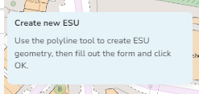
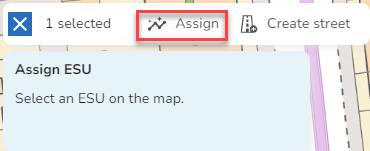
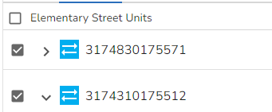
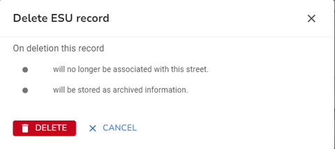

First you need to find the street that the ESU(s) you wish to maintain have been assigned to. You can use the Search to search for the street. Either select the street from the search results or press enter in the search and select the street from the Explorer to open the Street form where the street details will be displayed.
ESUs for a street are displayed on the ESU tab of the Street form.
•Select the ESU tab
Add an ESU
If you wish to add geometry to your street you will need to add an ESU. You may also need to add an ESU if a new section is added to a street.
•Select to Add ESU from one of the ESU Actions.
•You now get the choice to select either
oCreate a new ESU
▪The ESU is configured with the ESU defaults from the Street template and there is a tip displayed top left of the map with details on how to create your new ESU e.g.

▪Select the Direction and other details and then you can select the Draw a polyline tool from the map toolbar e.g.

▪Click on the map for the start of the ESU and click again each time you wish to change direction. Double click to end the polyline. If you wish to change the shape you can simply drag the nodes to a different location. You may override the default snapping by selecting Sketch Settings. Note: If you need to move the map whilst you are drawing your polyline simply hold down the left mouse button and drag the map in the direction you require and then you can continue drawing.
▪When you are happy with the geometry and ESU details, click OK to validate your entry. Note: The ESU id will only be calculated when you click Save.
▪England & Wales only - Each ESU must have a Highway Dedication record and this record is created automatically using the details from the Highway Dedication defaults from the Street template - please see Maintaining Highway Dedications for details.
▪England & Wales only - If your ESU is one-way then you may add a One-way Exemption if one applies - please see Maintaining One-way Exemptions for details.
oAssign an existing ESU from the map - say if you were creating a Type 3 street which shares ESUs with a Type 1 or 2 street, or have an unassigned ESU you wish to assign to this street.
▪Select an existing ESU from the map and a toolbar is displayed

▪Click Assign the the selected ESU is assigned to the street along with any Highway Dedication and One-way Exemption records that exist for the ESU.
•Now click Save to update the street.
Note: If you wish to see alternative ways of assigning existing ESUs to a street then please see the topic Alternative ways to assign ESUs to streets.
Edit an ESU
•Select the ESU you wish to edit.
•Change the ESU details as required.
•Now click on one of the Select tools in the Map Toolbar to select the geometry.

This displays the nodes on the polyline.
•To remove a node, select it with the mouse and press the Delete key on the keyboard.
•To move a node, select it with the mouse and drag it to a new location.
•To delete the entire feature you can either select it and then click the Delete feature from the Map tools

or you can select the Draw a polyline tool and draw a new polyline as you would if you were creating new geometry (see below for details).
•When you are happy, click OK to validate your changes.
•Now click Save to update the street.
Merge ESUs
•Select the ESUs you wish to merge by ticking the boxes for the ESUs in the ESU Explorer e.g.

•You will see a new toolbar appear e.g.
•Select the Merge ESUs tool.
If your ESUs are not touching you will see the following error and your ESUs will not be merged.
•If the merge is successful you will see "New ESU [1]" as the ESU is not allocated an ESU ID until you save the changes to the street.
•Now click Save to update the street and the new merged ESU will be given an ESU Id.
Notes:
•Any existing Highway Dedication records will be deleted and a new one created for the new ESU using the Highway Dedication defaults.
•If any of the selected ESUs had a one-way direction set then any existing OWE records will be deleted. The new merged ESU will have a direction of two-way.
Divide an ESU
•Select the ESU you wish to divide.
•Select to Divide ESU from one of the ESU Actions.
•Click on the map at the location where you wish to divide the ESU.
•The original ESU will no longer be displayed in the list and two new ESUs called "New ESU [1]" and "New ESU [2]" will be added.
•Click Save to update the street and the two new ESUs will each be given an ESU Id.
Notes:
•Any existing Highway Dedication records will be deleted and a new one created for each new ESU using the Highway Dedication defaults.
•If the selected ESU had a one-way direction set then any existing OWE records will be deleted. The new ESUs will have a direction of two-way.
Unassign an ESU from a Street
•Select the ESU(s) you wish to unassign by ticking the boxes for the ESUs in the ESU Explorer e.g.
•You will see a new toolbar appear e.g.
•Select the Unassign ESU  tool.
tool.
•The ESU will disappear from the ESU explorer.
•Click Save to update the street with these changes.
Note: If the ESU is no longer assigned to any street then it will appear in the Unassigned ESU layer. To assign this to another street please see the topic Assign an existing ESU to a Street.
Delete an ESU
•Select the ESU you wish to delete.
•Select to Delete ESU from one of the ESU Actions.
•You will see a confirmation dialog letting you know what will be deleted if you continue e.g.

•Click  to delete the ESU and unassign it from the street or click CANCEL to return without deleting.
to delete the ESU and unassign it from the street or click CANCEL to return without deleting.
•Now click Save to update the street.